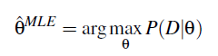
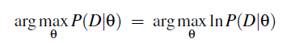
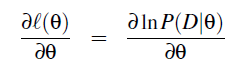
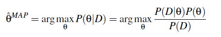

概率图模型
概率估计#
我们可以通过求解概率函数P(Y|X)来估计f:X\to Y，若已知所有 RV 的 joint distribution，很容易可以算出概率函数的数值解，但是通常情况需要的样本太大，只能通过其他方法来估计f:X\to Y
- be smart about how we estimate probability parameters from available data: MLE, MAP
- be smart about how we represent joint probability distributions: Naïve Bayes, Bayes Nets
MLE#
Maximum Likelihood Estimation


通常用\ell (\theta)表示lnP(D|\theta)，用L(\theta)表示似然函数P(D|\theta)
逐点最小化：

可得到所需参数\theta
MAP#
Maximum a Posteriori Probability Estimation
这是贝叶斯的方法，通过最大化后验概率，来使得参数估计可以容纳先验假设P(\theta)，其余和MLE相同

P(\theta)与\theta无关，只起到归一化作用，所以一般忽略为：

其中先验概率未知，其他都可以表示，一种对贝叶斯估计的批判就是人们通常为了简化计算选择先验概率，此处我们可以选择Beta distribution：

（参考ML version2 chapter2 Estimating Probabilities）
用这两种方法估计伯努利分布
分类#
Graphical Models 给出了变量之间关联性的先验知识以及参数估计（MAP）的先验知识；联系观测到的训练数据，进行估计&学习（常用于：Diagnosis, help systems, text analysis, time series models, ...）
核心问题：处理高维随机变量 p(x_1,x_2,...,x_p)
分类：

- 有向图 aka Bayesian Networks
- 无向图 aka Markov Random Fields
为了解决高维随机变量计算量巨大的问题，我们可以根据不同概率图表示的关系简化p(x_1,x_2,...,x_p)
基本法则：
- Conditional Independence：乘法P(X|Y,Z)=P(X|Z)
- Marginal Independence：加法/积分P(X,Y)=P(X)P(Y)


可推出两个常用法则：链式法则；贝叶斯法则


Naïve Bayes#
其实不算PGM，非常naïve的一个假设：所有维度相互独立，所以可以直接展开：

相对于Naïve Bayes的链式法则的展开，BN更加灵活的表示了条件独立关系，可以表示集合之间的独立关系，并且大大减少了独立参数的个数，从指数级降到了线性
属于生成模型
Bayesian Networks#
Representation#
BN包括：
- DAG：G=<V,E>
- CPD/CPT：P(X_i|Pa(X_i))
V之间的条件独立关系可由D-separated和Markov Blanket表述
Terminology:
- Parents = Pa(X) = immediate parents
- Antecedents = An(X) = parents, parents of parents, ...
- Children = Ch(X) = immediate children
- Descendents = De(X) = children, children of children, ...
分类：
- 静态贝叶斯网络：简简单单的根据DAG分解高维随机变量就行
- 动态贝叶斯网络 DBN：包括HMM和Kalman filters
Hidden Markov Model是针对时序分析的一种方法time series，RNN也是针对时序分析的（需要更多数据，分类精度更高）

D-separated#
作用：从图中找到条件独立关系，简化计算
三种基本拓扑结构：
- H-T和T-T：观测到C时，A与B之间通道阻塞，A与B独立；未观测到C时，A与B可通过C建立某种联系，A与B无marginal independent（A \perp B |C & A \not\perp B ）
- H-H：观测到C时，A与B反而受到联系，不再独立；否则是marginal independent的（A \not\perp B |C & A \perp B ）——explaining away
D-separated 其实就是三种基本拓扑节点关系的一个推广，将节点关系推广到集合关系。假定集合ABC相互之间不相交，若在A和C之间存在路径节点b，节点b和集合B之间满足关系：
- 当b节点的拓扑关系为tail—tail, head—tail这两种类型是，b\in B
- 当b节点的拓扑关系为head—head结构时，b节点及其后继节点一定不在B集合当中，b \not\in B
则A \perp C |B

可以用马尔科夫毯来表示这种关系
Markov Blanket#
概率图中，为了使其中一个节点和其它节点条件独立，我们用毯子盖住这个节点周围与其相关的节点，那么毯子外面的节点和这个节点就条件独立了。

在基于全局节点条件下，求某一个节点的概率问题可以写为：
$$
p(x_i|x_{-i}) \propto \frac{p(x_i|x_{pa(i)})}{p(x_{ch(i)}|x_i,x_{pa(ch(i))})}
$$
Markov Random Fields#
马尔可夫网络中，我们可以用势能 （\phi_i）来表示不同结点或结点团之间的影响力大小。
可以用联合分布（Gibbs分布）表示马尔可夫网络

n阶马尔可夫假设（HMM是1-gram）下的马尔可夫过程：在一个过程中，每个状态的转移只依赖于前n个状态，并且只是个n阶的模型。
Inference#
要是能知道CPD，带入就好了
NP-hard问题
Approximate methods too, e.g., Monte Carlo methods, ...
P14
Learning#
Given training set D，find CPD
对于每个node i：
- 确定Pa(X_i)来设定CPD中待学习参数
- 找到该节点的概率密度函数和对应的似然函数
- 逐点最小化L(\theta)求得参数
HW3.3
- Easy for known graph, fully observed data (MLE’s, MAP est.)
- EM for partly observed data, known graph
- Learning graph structure: Chow-Liu for tree-structured networks
- Hardest when graph unknown, data incompletely observed
EM算法#
Expectation - Maximization：是为了在概率图已知，数据未知或者部分未知的情况下应用bayes的算法
- 初始化 theta
- E-step：用 X 和 \theta，计算 P(X,Z|\theta ')
- M-step：更新theta：\theta \to \arg\max\limits_{\theta '} Q(\theta '|\theta) ）
- 对于MLE来说：Q(\theta '|\theta) = E_{P(Z|X,\theta)}[\log P(X,Z|\theta')]
Usupervised clustering is just extreme case for EM with zero labeled examples
EM for Mixture of Gaussian Clustering：Lec11&12P21
Chow-Liu算法#
如何构建概率图？
Chow-Liu Algorithm：minimizes Kullback-Leibler divergence，to finds “best” tree-structured network
$$
KL(P(X)||T(X)) \equiv \sum_k P(X=k)\log \frac{P(X=k)}{T(X=k)}
$$
To minimize KL(P || T) , it suffices to find the tree network T that maximizes the sum of mutual informations I(A,B) over its edges (like between variable A and B)
$$
I(A,B) = \sum_a \sum_b P(a,b) \log \frac{P(a,b)}{P(a)P(b)}
$$
for tree networks with nodes X \equiv <X_1,...,X_n>
$$
\begin{equation}
\begin{aligned}
KL(P(X)||T(X)) &\equiv \sum_k P(X=k)\log \frac{P(X=k)}{T(X=k)} \&= -\sum_i I(X_i,Pa(X_i)) + \sum_i H(X_i) - H(X_1 ... X_n))
\end{aligned}
\end{equation}
$$
- for each pair of vars A,B, use data to estimate P(A,B), P(A), P(B)
- for each pair of vars A,B calculate mutual information I(A,B)
- calculate the maximum spanning tree over the set of variables, using edge weights I(A,B) (given N vars, this costs only O(N^2) time)
- add arrows to edges to form a directed-acyclic graph
- learn the CPD’s for this graph